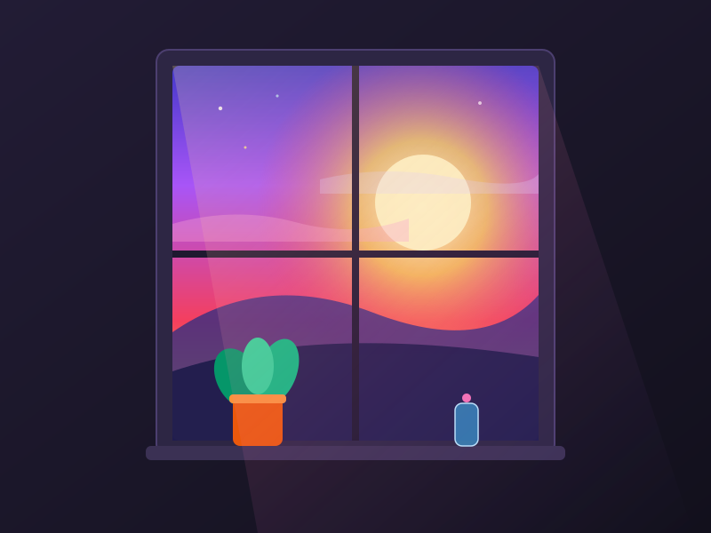
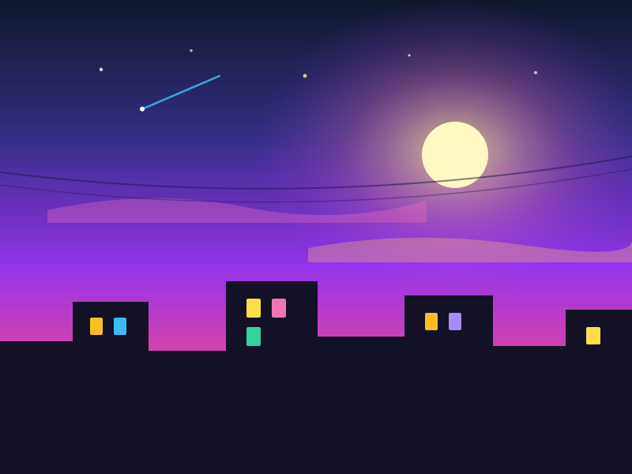

造物
2026.11.12
把工具做减法：为什么这个博客没有用任何前端框架
很多时候想写博客，结果光折腾框架、装几百兆依赖包、调主题报错就把热情消耗光了。 这次干脆换了个思路：只保留 Astro 最让人舒服的设计理念——内容存成干净的纯文本、最终输出零冗余的纯静态网页、交互只在必要的地方轻量挂载，但底层完…


甩掉几百兆的 node_modules，只留纯文本、本地文件夹和自己写得懂的几百行代码。
阅读全文很多时候想写博客，结果光折腾框架、装几百兆依赖包、调主题报错就把热情消耗光了。 这次干脆换了个思路：只保留 Astro 最让人舒服的设计理念——内容存成干净的纯文本、最终输出零冗余的纯静态网页、交互只在必要的地方轻量挂载，但底层完…
周六晚上关掉手机通知，把文德斯那部片子又放了一遍。没有激烈冲突，只有清晨扫落叶的沙沙声、车载磁带里的老摇滚，还有午休抬头拍下的树影。 现在看什么都习惯按二倍速，反而这种慢得近乎固执的日常节奏最让人安心。看完顺手泡了杯热茶，觉得这个…
趁着年底把手机和电脑里攒了一整年的零碎备忘录翻了一遍。很多当时觉得天大的烦心事，隔了大半年再看，其实也就两行字的事。 删掉了大半过期的待办，只留下几段当时随手记下的对话和旅途片段。有些东西还是落成干净的纯文本存起来最踏实。